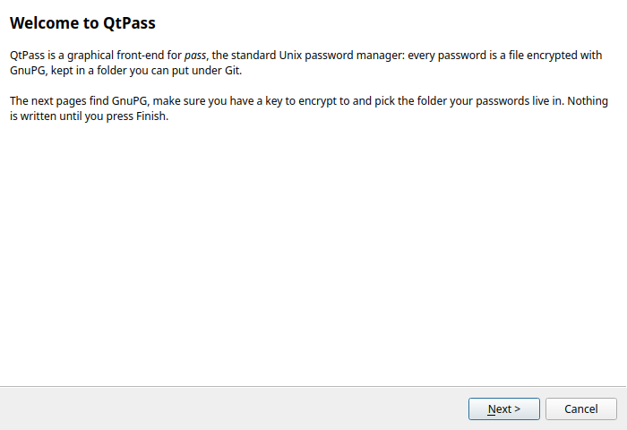
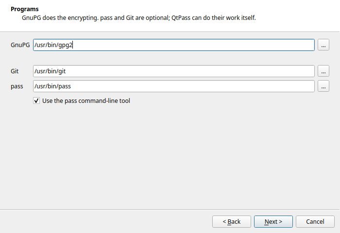
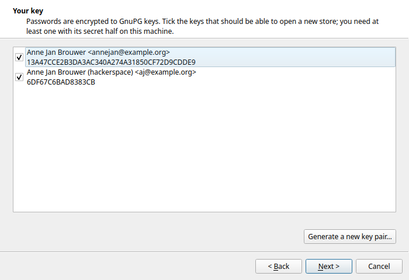
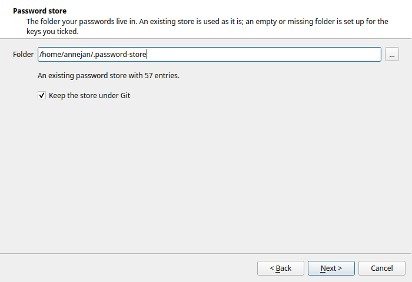
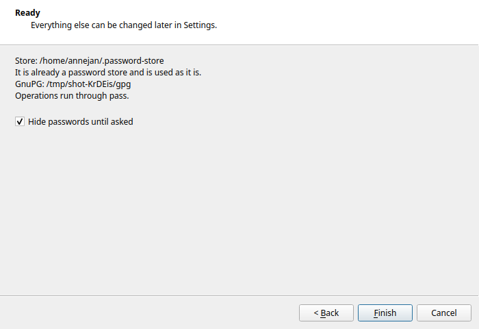
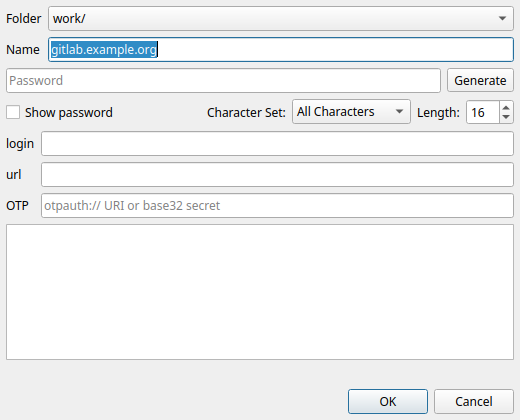
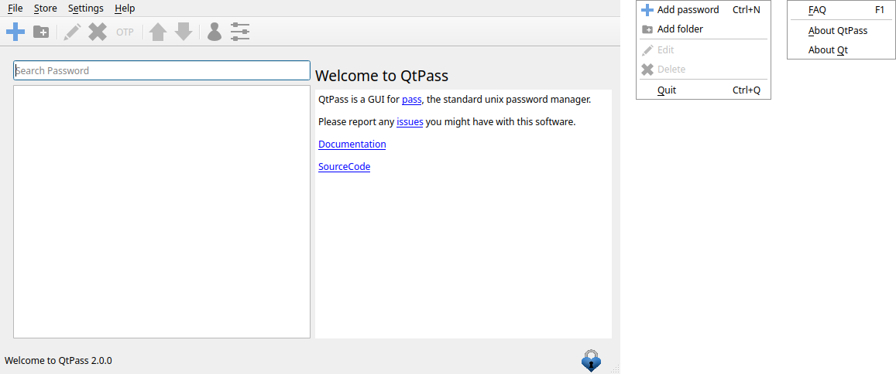
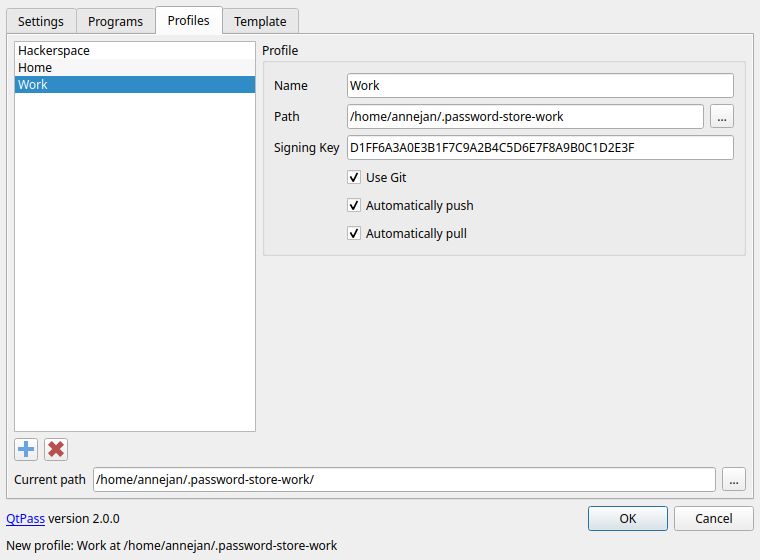

Current releaseQtPass 1.8.3
The pictures follow your colour scheme, or pick one:
One store, every desktop
The demo store with mail.example.com open, captured on each platform with its own window frame and widget style. QtPass brings no theme of its own: it looks the way your desktop does.


Up close, on KDE Plasma


pass or the built-in Git and
GnuPG handling, password generation, clipboard, profiles.
In developmentComing in 2.0
2.0 is not released yet; the second release candidate, 2.0.0-rc2, is out for testing. These are captures of a development build, made without a window manager, so the windows have no title bars. Fifty-four seconds, no sound:
First start
A wizard replaces the old "please configure me" dialog: it finds
GnuPG, pass and Git, lists your secret keys or makes
one, and creates or adopts a password store.










Adding a password


A menu bar


Profiles


The tour in pieces
Everything on this page is in the 2.0 changelog, with the program that recorded the clips in qtpass-screenshots.